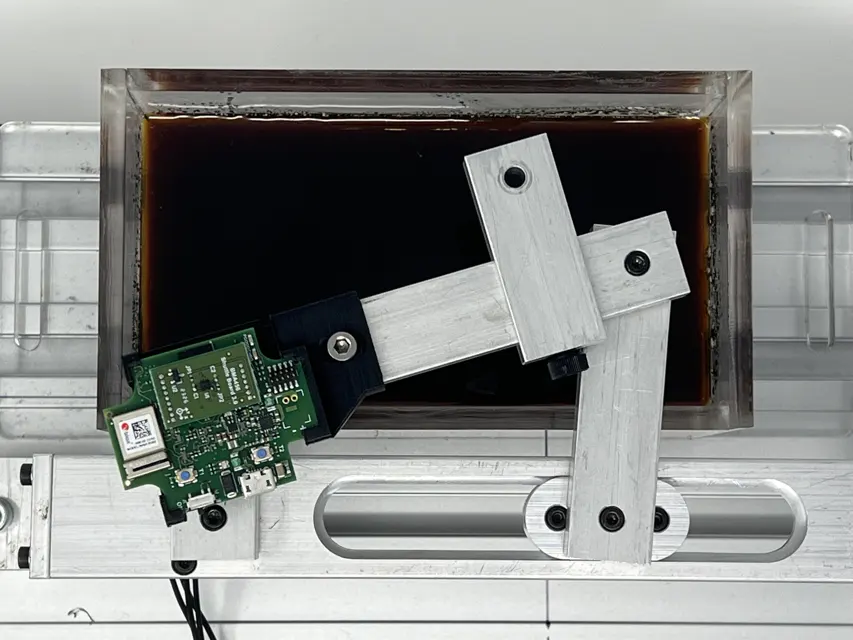
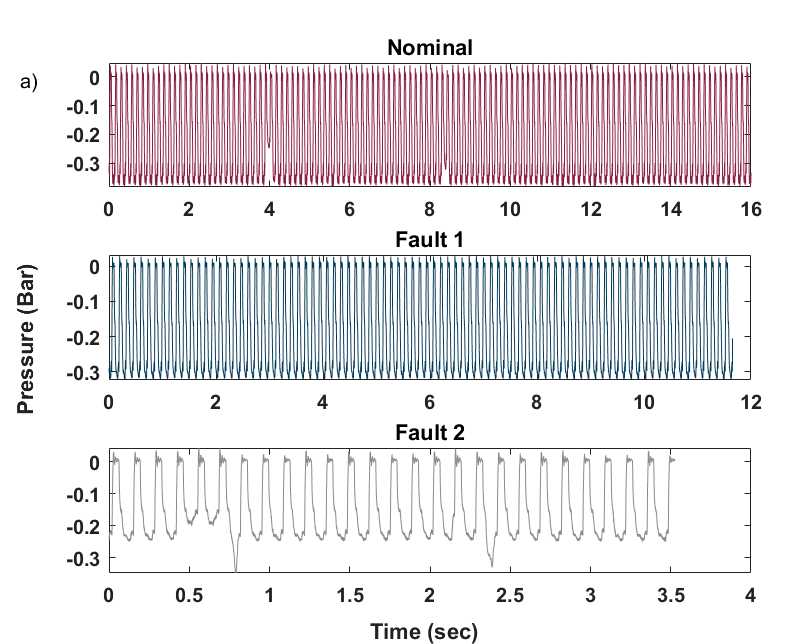

For each held-out run, the display selects the largest positive
excursion above its neighboring retained readings among screened
intervals. The dashed limit sits halfway across that excursion to
demonstrate a missed reading. The plant supplies its own acceptance
limit.
Held-out results and original files
Within each load and command, repeats 00 and 01 supply the maximum
observed adjacent current-change rate, rounded up to a whole mA/s.
On unseen repeat 02, keep every fourth reading and the last. At each
withheld timestamp, test whether its current is reachable from both
retained neighbors at that rate. Each time gap uses its recorded
duration.
Comparison
Rate (mA/s)
Hidden readings
Outside bounds
Inconsistent endpoint pairs
Original recording
Role
Rows
Present current range (mA, raw)
Flagged rows
Download a recording above, then use
Setup & trace → Import a native four-bar servo
recording
in the stroke trial to analyze any of its five signals. The native
importer uses the original timestamps.
Mechanism geometry
What the four-bar proves

The published pivot distances are 95 mm for ground, 30 mm for the
crank, 104 mm for the coupler and 60 mm for the rocker. They leave
21 mm folded and
39 mm extended nominal closure margin over a full
turn. Carton clearance needs its own measurement or geometry.
Photo resized from the original by Röder, Ebel and Eberhard.
DaRUS · CC BY 4.0
Direct carton-handling evidence
When a suction cup detaches

Calabrese and colleagues recorded pressure at 10 kHz on four cups
moving a carton through a 134 ms cycle. Their three experiments show
normal operation, one cup detached and two cups detached. The
authors report loss of function with two detached cups.
Figure 3a cropped from Calabrese et al. The raw recordings require
third-party permission.
Applied Sciences · CC BY 4.0
Factory records · PIADE
Where a field trial could matter
Actual operating intervals on five anonymous packaging machines. Hours
sum the recorded durations by state. Machine coverage varies, and the
logs do not identify the share attributable to a carton handoff.
Machine
Intervals
Production (h)
Downtime (h)
Scheduled downtime (h)
Performance loss (h)
Idle (h)
Estimate the value of a trial on one machine
Use the selected machine’s recorded downtime across its entire
published observation period. Enter the fraction your site
substantiates as recoverable, the marginal value of an hour, and the
cost of the trial over that same period.
Eight packaging machines recorded activity around a watertight closure
module. Two alarm counters were identified by the authors as fault
targets. A sensor row contains ten-minute averages. Alarm and warning
files have their own coverage.
Choose saved trial records with the incumbent inspection and bench
outcome filled in. Each setup and run counts once. The app recomputes
the saved calculations and counts paired catches and false alarms
against your bench outcomes.
Select records to compare.
Operator-adjudicated outcome
Both flagged
Only Linkwright flagged
Only incumbent flagged
Neither flagged
Assess each run against the same declared requirement. The operator
records the bench outcome independently. Calculations use fully
adjudicated, decisive machine runs. Counts for synthetic, unlabeled
and inconclusive cases are shown separately. The selected public servo
examples illustrate a chosen threshold and do not establish cartoner
performance.